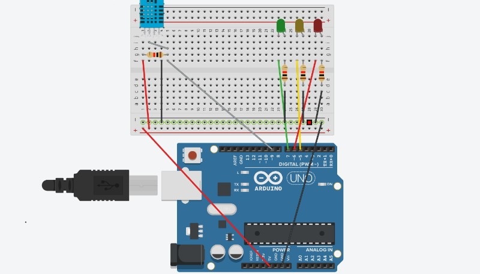

Descrição do Projeto
A motivação para criar este projeto foi testar a capacidade de uma IA controlar uma máquina de forma constante e sem falhas, contornando a aleatoriedade das respostas que a IA pode gerar e criando um efeito consistente e eficiente.
O objetivo do projeto é demonstrar que a integração entre uma IA e outras máquinas pode ser simples quando conceitos de machine learning são aplicados, desmistificando a ideia de que se trata de algo fora da realidade ou impossível.
Além disso, o projeto busca mostrar como integrar sistemas de IA no controle de dispositivos com Arduino, ampliando as possibilidades para projetos existentes e abrindo portas para novas iniciativas.
Esquema Conceitual - Arduíno
Componentes
- 3 LEDs (Amarelo, Verde, Vermelho) - Emite uma luz quando uma corrente o excita (apenas em uma direção, do pino mais longo para o pino mais curto)
- 4 Resistores (3 unidades de 1 KΩ para os LEDs e 1 unidade de 10 KΩ para o sensor DHT) - Limita a corrente elétrica que passa pelo circuito. Para limitar mais ou menos corrente, o valor deste componente pode variar
- 1 Sensor de temperatura e umidade DHT - Um sensor digital com um único fio de sinal, capaz de ler temperatura e umidade
- 12 Jumpers (mínimo possível) - Cabos com conectores nas extremidades que permitem conectar os componentes entre si por meio da protoboard
- 1 Protoboard - Matriz de contato com pontos que permite conectar componentes eletrônicos sem a necessidade de solda
- 1 Placa de Hardware (Arduíno) - Plataforma de prototipagem eletrônica que permite o desenvolvimento de projetos tecnológicos, alterando sua execução baseado no código que estiver salvo em sua memória
Passo a Passo
-
Instale a IDE do arduino, e o VSCode caso ainda não tenha instalado.
No VSCode instale a extensão do Python.
Baixar IDE do Arduino
Baixar VSCode -
Crie uma chave de API no Gemini: Primeiro crie uma conta ou faça login com sua conta google.
Assim que tiver uma conta clique em "Gerar uma chave de API".
Na nova aba clique em "Criar chave de API", não esqueça de copiar e salvar o código da chave em um local seguro.
Chave API Gemini -
Baixe os códigos do projeto e extraia a pasta, dentro dela vai encontrar 3 arquivos.
O código no arquivo "arduino.ino" você precisa copiar e colar na IDE do arduino.
Os arquivos "gemini_arduino.py" e "requirements.txt" copie eles para seu VSCode.
Na parte do código que estiver escrito SUA_CHAVE_API substitua pela sua chave API adquirida no site.
Download AICM -
Instale as bibliotecas necessárias do VSCode.
No terminal do VSCode coloque o comando:pip install -r requirements.txt
Após a instalação estiver concluída reinicie o VSCode.
Caso ocorra algum erro com a porta serial ao tentar rodar o código depois, tente desistalar e reinstalar a biblioteca serial
pip uninstall pyserial
pip install pyserial -
Instale as bibliotecas necessárias da IDE do arduino.
Defina o arduino com a porta serial como COM3.
Baixe os dois arquivos zip abaixo, e clique em 'sketch' na sua IDE do arduino, após isso clique em 'Include Library', e depois 'Add .ZIP library...' agora selecione o arquivo zip baixado aqui, e depois repita o processo para o outro arquivo zip.
Baixar arquivo ZIP 1
Baixar arquivo ZIP 2 -
Por fim monte o arduino como mostrado no vídeo referenciado aqui.
Execute o código python no VSCode e clique no terminal.
Vídeo Tutorial ↓
Código
Código Python
import google.generativeai as genai
import serial
import time
import pyttsx3
import speech_recognition as sr
import keyboardImporta as bibliotecas
def main():
assistente_falante = True
ligar_microfone = True
arduino = serial.Serial('COM3', 9600)
time.sleep(2)
genai.configure(api_key="SUA_CHAVE_API")
model = genai.GenerativeModel('gemini-pro')
chat = model.start_chat(history=[])
contexto = "A partir de agora, eu atuarei como um sistema de controle para o Arduino, Tenho controle sobre LEDs e outros componentes, mas não posso acessar diretamente sensores de temperatura ou umidade. Quando um sensor de temperatura ou umidade for mencionado, eu apenas transmitirei as informações coletadas por um sensor conectado ao Arduino. Quando for mencionado leds eu respondo diretamente com comandos de ativação e desativação dos LEDs e outros componentes, sem formatação adicional como *. Responderei com palavras-chave claras para cada ação, apenas com 'led verde ligando', 'led verde desligando', 'led vermelho ligando', 'led vermelho desligando', 'led amarelo ligando', 'led amarelo desligando', para que o código interprete e execute corretamente cada comando. Se eu receber algo que não esteja relacionado a comandos, responderei de maneira simpática."
if assistente_falante:
engine = pyttsx3.init()
voices = engine.getProperty('voices')
engine.setProperty('voice', voices[0].id)
if ligar_microfone:
r = sr.Recognizer()
mic = sr.Microphone()
Configura o sistema para funcionar pelo sistema de voz, reconhecendo palavras e retornando áudio.
Define a porta serial à qual o Arduino vai se conectar; no código atual, está configurada como COM3. Configure essa porta conforme desejado.
Configura o Gemini e cria uma variável chamada "contexto". Nessa variável, são aplicados conceitos de machine learning para que a IA execute o código conforme o planejado. Caso a IA não responda adequadamente, tente modificar o texto.
while True:
print("Pressione 'barra de espaço' para começar a falar.")
keyboard.wait('space')
if ligar_microfone:
with mic as fonte:
r.adjust_for_ambient_noise(fonte)
print("Fale alguma coisa")
audio = r.listen(fonte)
try:
texto = r.recognize_google(audio, language="pt-BR")
except Exception:
texto = ""
full_input = contexto + "\nUsuário: " + texto
Define que necessita clicar na barra de espaço para a IA começar a reconhecer o pedido.
O comando enviado pelo usuário se torna uma variável chamada 'texto' que se junta a outra varável chamada de 'full_input'.
if "temperatura" in texto.lower() or "umidade" in texto.lower():
arduino.write(b'leitura_tempUmid\n')
temperatura = None
umidade = None
while temperatura is None or umidade is None:
if arduino.in_waiting > 0:
linha = arduino.readline().decode().strip()
if linha:
if temperatura is None:
temperatura = linha
elif umidade is None:
umidade = linha
if temperatura and umidade:
print(f"Temperatura: {temperatura}°C, Umidade: {umidade}%")
full_input += f"\nTemperatura atual: {temperatura}°C"
full_input += f"\nUmidade atual: {umidade}%"
else:
print("Erro na leitura da temperatura ou umidade.")
Quando perceber que o usuário mencionou as palavras "temperatura" ou "umidade", o código envia um sinal para o Arduino medir esses valores.
Enquanto o Arduino não terminar de enviar esses dois valores, o código permanece em loop.
Após receber os valores, as novas informações são adicionadas à variável "full_input".
response = chat.send_message(full_input)
print("Gemini:", response.text)
if "led verde ligando" in response.text.lower():
arduino.write(b'led_verde_ligando\n')
if "led verde desligando" in response.text.lower():
arduino.write(b'led_verde_desligando\n')
if "led vermelho ligando" in response.text.lower():
arduino.write(b'led_vermelho_ligando\n')
if "led vermelho desligando" in response.text.lower():
arduino.write(b'led_vermelho_desligando\n')
if "led amarelo ligando" in response.text.lower():
arduino.write(b'led_amarelo_ligando\n')
if "led amarelo desligando" in response.text.lower():
arduino.write(b'led_amarelo_desligando\n')
if assistente_falante:
engine.say(response.text)
engine.runAndWait()
if __name__ == '__main__':
main()
Em seguida, é feita a requisição para a API do Gemini.
Dependendo das respostas que a IA retornar sobre os LEDs, um comando diferente será enviado para o Arduino.
Código Arduino
#include "DHT.h"
const int pino_dht = 9;
float temperatura;
float umidade;
DHT dht(pino_dht, DHT11);
const int ledPinG = 7;
const int ledPinR = 6;
const int ledPinY = 5;
Cria as variáveis do projeto.
void setup() {
Serial.begin(9600);
pinMode(ledPinG, OUTPUT);
pinMode(ledPinR, OUTPUT);
pinMode(ledPinY, OUTPUT);
dht.begin();
}
Configura o setup com os componentes usados.
void loop() {
temperatura = dht.readTemperature();
umidade = dht.readHumidity();
if (Serial.available()) {
String comando = Serial.readStringUntil('\n');
if (comando == "leitura_tempUmid") {
float temperatura = dht.readTemperature();
float umidade = dht.readHumidity();
if (isnan(temperatura) || isnan(umidade)) {
Serial.println("Erro ao ler o sensor");
} else {
Serial.println(temperatura, 2);
Serial.println(umidade, 2);
}
delay(200);
}
if (comando == "led_verde_ligando") {
digitalWrite(ledPinG, HIGH);
} else if (comando == "led_verde_desligando") {
digitalWrite(ledPinG, LOW);
}
if (comando == "led_vermelho_ligando") {
digitalWrite(ledPinR, HIGH);
} else if (comando == "led_vermelho_desligando") {
digitalWrite(ledPinR, LOW);
}
if (comando == "led_amarelo_ligando") {
digitalWrite(ledPinY, HIGH);
} else if (comando == "led_amarelo_desligando") {
digitalWrite(ledPinY, LOW);
}
}
}
Esse loop executa os comandos recebidos pelo código python, ativando e desativando os LEDs, ou ativando o sensor DHT.
Vídeo Tutorial
Desafios
O principal desafio foi criar algo que ainda não havia sido feito e, por esse motivo, não havia guias explicativos de como criar. A forma de superar esse desafio foi imaginar possíveis soluções para fazer o sistema funcionar e testar, refinando o processo a cada tentativa.
Dessa forma, a principal lição desse projeto é perceber que não precisamos ficar restritos a copiar o que já foi feito. Se você tem uma ideia interessante, estude como transformá-la em realidade, mesmo que outros ainda não tenham feito.